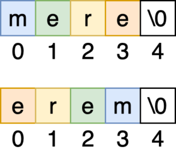

Incepem cu cea mai usoara problema: avem un sir de caractere „Ana se duce la piata” iar noi trebuie sa identificam prima litera din fiecare cuvant. Pentru a rezolva aceasta problema vom separa mai intai propozitia in cuvinte folosind functia strtok explicata in tutorialul precedent.
Dupa ce am separat fiecare cuvant din propozitie utilizam cuvant[0] pentru a afisa fiecare litera din primul cuvant.
#include<iostream>
using namespace std;
int main()
{
char propozitie[128] = "Ana se duce la piata";
char *cuvant = strtok(propozitie, " ");
while(cuvant) {
cout << cuvant << " -> prima litera: " << cuvant[0] << "\n";
cuvant = strtok(NULL, " ");
}
return 0;
}
Ultima litera a unui cuvant
Urmatoarea problema este similara cu prima, doar ca de data aceasta trebuie sa afisam ultima litera. Tot ceea ce trebuie sa facem este sa schimbam cuvant[0] cu cuvant[strlen(cuvant) - 1] deoarece cu strlen(cuvant) obtinem lungimea totala a sirului, iar mai apoi scadem -1 deoarece numerotarea incepe de la 0, iar pentru a ajunge la ultima litera trebuie sa scadem 1.
#include<iostream>
using namespace std;
int main()
{
char propozitie[128] = "Ana se duce la piata";
char *cuvant = strtok(propozitie, " ");
while(cuvant) {
cout << cuvant << " -> prima litera: " << cuvant[ strlen(cuvant) - 1 ] << "\n";
cuvant = strtok(NULL, " ");
}
return 0;
}
Numar de vocale dintr-un sir de caractere
Vom presupune ca avem un text similar cu cel din problema precedenta: „Ana se duce la piata” pentru a numara numarul de vocale din acest text, vom face o functie auxiliara eVocala care va returna true / false in functie de caracterul trimis prin parametru.
#include<iostream>
#include<cstring>
using namespace std;
bool eVocala(char c) {
if(c == 'a' || c == 'e' || c == 'i' || c == 'o' || c == 'u')
return true;
if(c == 'A' || c == 'E' || c == 'I' || c == 'O' || c == 'U')
return true;
return false;
}
int main() {
char propozitie[128] = "Ana se duce la piata";
int lungime = strlen(propozitie);
int vocale = 0;
for(int i = 0; i < lungime; i++) {
if(eVocala(propozitie[i])) {
cout << "Vocala: " << propozitie[i] << "\n";
vocale = vocale + 1;
}
}
cout << "Avem: " << vocale << " vocale in text.";
return 0;
}
Palindromul unui cuvant
In cateva probleme de Bacalaureat ni se cere sa calculam palindromul unui cuvant. Pentru a face acest lucru vom lucra cu doua cuvinte „mere” si „cojoc”. Incepand de la cap vom construii rand pe rand fiecare litera.

#include<iostream>
#include<cstring>
using namespace std;
int main()
{
char cuvant[10];
char palindrom[10];
cin >> cuvant;
int lungime = strlen(cuvant);
palindrom[lungime] = cuvant[lungime];
for(int i = 0; i < lungime; i++) {
palindrom[lungime - 1 - i] = cuvant[i];
}
cout << palindrom;
return 0;
}
Sufixul unui cuvant
Sa presupunem ca avem sufixul „aur” si propozitia „Am un dinozaur portocaliu care este centaur„, trebuie sa identificam cuvintele care il au drept sufix pe „aur” (adica acele cuvinte care se termina cu „aur”), mai precis: dinozaur si centaur. Pentru a face acest lucru vom cauta in ultimele litere ale unui cuvant folosind pointerii.
Daca v-ati uitat la primul videoclip din aceasta seria atunci probabil stiti despre ce este vorba. De exemplu, daca am un cuvant[10] = dinozaur si afisez cout << cuvant voi obtine dinozaur. In schimb, daca execut cout << cuvant + 1 voi obtine inozaur.
Asadar, rezolvarea este urmatoarea:
#include<iostream>
#include<cstring>
using namespace std;
int main()
{
char sufix[10] = "aur";
char propozitie[100] = "Am un dinozaur portocaliu care este centaur";
int lungime_sufix = strlen(sufix);
char *cuvant = strtok(propozitie, " ");
while(cuvant) {
int lungime_cuvant = strlen(cuvant);
int pozitie = lungime_cuvant - lungime_sufix;
if(pozitie > 0) {
char sufix_cuvant[10] = "";
strcpy(sufix_cuvant, cuvant + pozitie);
if(strcmp(sufix_cuvant, sufix) == 0)
cout << cuvant << "\n";
}
cuvant = strtok(NULL, " ");
}
return 0;
}
Prefixul unui cuvant
Acum vom presupune ca avem prefixul „sar” iar propozitia este „Nu imi plac sarmalele si sardinele„, trebuie sa identificam cuvintele care il au drept prefix pe „sar” (adica acele cuvinte care incep cu „sar”), mai precis: sarmalele si sardinele. Pentru a face acest lucru vom folosii functia strncpy care copiaza primele n caractere ale unui cuvant.
Iar ultima dintre cele mai populare probleme este aceea in care trebuie sa numaram de cate ori apare un cuvant intr-o propozitie. De exemplu daca avem propozitia: „Azi este Soare si Mihai este milionar. Mihai se duce sa manance caracatita cu caramael” trebuie sa numaram de cate ori apare „Mihai” in propozitie.
Pentru a rezolva aceasta problema, vom sparge propozitia in cuvinte si vom numara de cate ori apare cuvantul cerut.
#include<iostream>
#include<cstring>
using namespace std;
int main()
{
char cauta_cuvant[10] = "Mihai";
char propozitie[100] = "Azi este Soare si Mihai este milionar. Mihai se duce sa manance caracatita cu caramael";
int nr = 0;
char *cuvant = strtok(propozitie, " ");
while(cuvant) {
if(strcmp(cuvant, cauta_cuvant) == 0)
nr = nr + 1;
cuvant = strtok(NULL, " ");
}
cout << cauta_cuvant << " a aparut de " << nr << " ori.\n";
return 0;
}
Probleme Propuse
O lista cu probleme de siruri de caractere propuse spre rezolvare:
Se dă un șir de caractere. Să se determine câte vocale din șir sunt cuprinse între două consoane.
Să se scrie un program care citeşte un şir de caractere format din litere mici ale alfabetului englez şi înlocuieşte fiecare vocală cu litera mare corespunzătoare.
Să se scrie un program care citeşte de la tastatură o propoziţie formată din mai multe cuvinte separate prin spaţii şi transformă prima şi ultima literă a fiecărui cuvânt în literă mare.
Să se înlocuiasca cu cifra 5 ultima literă a fiecărui cuvânt din textul conținut de fișierul prosir.in.
Se consideră un cuvânt format din cel puțin două și cel mult 100 de caractere, numai litere mici ale alfabetului englez.
Scrieţi un program care citeşte de la tastatură un cuvânt de tipul precizat și afișează pe ecran mesajul DA în cazul în care cuvântul conține doar consoane şi, eventual, vocala i, sau mesajul NU în caz contrar.
Se consideră un text cu cel mult 100 de caractere, în care cuvintele sunt formate numai din litere mari și mici ale alfabetului englez și sunt separate prin câte un spațiu. Textul reprezintă numele unei instituții sau al unei organizații.
Scrieți un program care citește de la tastatură un text de tipul precizat și construiește în memorie, apoi afișează pe ecran, un șir de caractere ce reprezintă acronimul corespunzător numelui citit. Acronimul este format din primul caracter al fiecărui cuvânt al numelui care începe cu majusculă.
Se dă o propoziție formată din litere mari și mici ale alfabetului englez, cifre, spații și semne de punctuație, în care literele mari și mici se consideră identice. Determinați vocala din șir cu număr maxim de apariții.
Să se scrie un program care să afişeze prefixele şi sufixele unui cuvânt citit.
Să se scrie un program care citește un cuvânt și îl afișează după interschimbarea primei vocale cu ultima consoană.
Să se scrie un program care citește un text și inserează după fiecare vocală caracterul *.
Marcel a primit o tastatura noua de ziua lui. El vrea sa scrie un text folosind doar litere ale alfabetului englez si spatii. El a descoperit tasta “CapsLock”, care atunci cand este apasata activeaza tasta. Daca tasta este activata, atunci toate literele care le va scrie in continuare, pana in momentul in care tasta este dezactivata(apasand CapsLock inca o data) vor fi majuscule.
Aflati textul scris de Marcel.
Verificate! Vezi aici rezolvarile corecte:
#include <bits/stdc++.h>
#include <string.h>
using namespace std;
char sir[300] , vocale[]="aeiou";
char consoane[]="bcdfghjklmnpqrstvwxyz";
int nr=0;
int main()
{
cin.get(sir,300);
for(int i = 1 ; i < strlen(sir)-1 ; ++i)
if(strchr(vocale,sir[i]) && strchr(consoane, sir[i-1]) && strchr(consoane, sir[i+1]))
nr++;
cout << nr;
return 0;
}
#include <iostream>
#include <cstring>
using namespace std;
int main(){
char s[22];
//citim sirul. NU contine spatii, poate fi citit cu cin >>
cin >> s;
for(int i=0;s[i] ;++i) //parcurgem sirul
if(strchr("aeiou",s[i])) //daca pe pozitia curenta este vocala
s[i] -= 'a'-'A'; // o transformam in litera mare
/*
* Pentru a transforma o litera mica in litera mare, folosim faptul
* ca diferenta intre litera mica si litera mare este aceeasi pentru
* toate literele, si anume diferenta dintre 'a' si 'A', adica 'a'-'A'
*
* Astfel, vom scadea din caracterul litera mica valoarea 'a'-'A'
*
* Pentru a transforma o litera mare in litera mica, vom aduna la
* litera mare valoarea 'a' - 'A'
*
* */
//afisam sirul modificat
cout << s ;
return 0;
}
#include <iostream>
using namespace std;
char ch[256];
int main()
{
cin.getline(ch , 256);
int i = 0;
while(ch[i]!='\0')
{
if(i==0 || ((int)ch[i-1]==32 || (int)ch[i+1]==32) && ((int)ch[i] >= 97 && (int)ch[i] <= 122) || (ch[i+1]=='\0'))
{
int nr=(int)ch[i]-32;
cout << (char)nr;
}
else
cout << ch[i];
i++;
}
return 0;
}
#include <iostream>
#include <fstream>
#include <cstring>
using namespace std;
int main()
{ char char s[201];
int i;
ifstream in("prosir.in");
ofstream out("prosir.out");
in.get(s,201);
for(i=1;s[i];i++)
if(s[i]==' ' and isalpha(s[i-1]))
s[i-1]='5';
s[strlen(s)-2]='5';
cout<<s;
return 0;
}
#include <bits/stdc++.h>
using namespace std;
char ch[256];
int main()
{
cin.getline(ch , 256);
int i = 0;
int cnt1=0;
bool da = true;
while(ch[i]!='\0')
{
if(ch[i]=='a' || ch[i]=='e' || ch[i]=='o' || ch[i]=='u')
da=false;
else if(ch[i]!='i')
cnt1++;
i++;
}
if(da && cnt1)
cout << "DA";
else
cout << "NU";
return 0;
}
În secvenţa de instrucţiuni de mai jos, variabila s memorează un şir de caractere format
doar din litere ale alfabetului englez, iar variabilele i şi n sunt de tip int. Ştiind că în urma
executării secvenţei s-a afişat succesiunea de caractere eied*eael* scrieţi care este şirul de
caractere memorat de variabila s.
n=strlen(s);
for(i=0;i<n;i++)
if (s[i]==‟e‟) cout<<"*";
else cout<<'e'<<s[i];
Fie s o variabilă ce memorează un şir de caractere, format doar din litere ale alfabetului
englez, şi i o variabilă de tip int. Scrieţi instrucţiunile ce pot înlocui punctele de suspensie din
secvenţa de program alăturată astfel încât executarea ei să determine eliminarea tuturor
literelor mici din şirul s şi apoi afişarea şirului obţinut.
i=0;
while (i<strlen(s))
...............
cout<<s;
Fie s o variabilă ce memorează un şir de caractere, c o variabilă de tip char, iar i şi j două
variabile de tip int. Scrieţi instrucţiunile ce pot înlocui punctele de suspensie din secvenţa de
program alăturată astfel încât executarea ei să determine modificarea conţinutul şirului s prin
interschimbarea caracterelor aflate pe poziţii simetrice faţă de mijlocul şirului (primului
caracter cu ultimul, al doilea cu penultimul, etc).
i=0;
j=strlen(s)-1;
while (i<j)
{...}
Ce se afişează în urma executării secvenţei de program alăturate dacă variabila s
memorează şirul de caractere abcdefgh?
strcpy(s+2,s+4);
cout<<s<<” ”<<strlen(s);
Ce se va afişa pe ecran în urma executării secvenţei de program alăturate, în care
variabila s memorează un şir cu cel mult 10 caractere, iar variabila i este de tip întreg?
i=0; char s[11]="abaemeiut";
cout<<strlen(s);
while (i<strlen(s))
if (strchr("aeiou",s[i])!=NULL))
{ strcpy(s+i,s+i+1); i=i+1; }
else
i=i+2;
cout<<" "<<s;
Ce se va afişa în urma executării secvenţei de program alăturate ştiind că variabila a
memorează un şir cu cel mult 100 de caractere, iar variabila i este de tip întreg ?
În secvenţa de program alăturată, variabila a memorează un şir cu cel mult 100 de
caractere, iar variabila i este de tip întreg. Completaţi punctele de suspensie din secvenţă
astfel încât, în urma executării secvenţei, aceasta să afişeze şirul de caractere *nf*rm*t*c*.
Ce se va afişa în urma executării secvenţei de program alăturate, ştiind că variabila x
memorează un şir cu cel mult 100 de caractere, iar variabila i este de tip întreg ?
strcpy(x,”bac2009”);
cout<<x<<endl;
for(i=0;i<strlen(x);i++)
if (strchr(“0123456789”,x[i])==0)
cout<<x[i];
Ce se va afişa în urma executării secvenţei de program alăturate ştiind că variabila a
memorează un şir cu cel mult 100 de caractere, iar variabilele i şi k sunt de tip întreg?